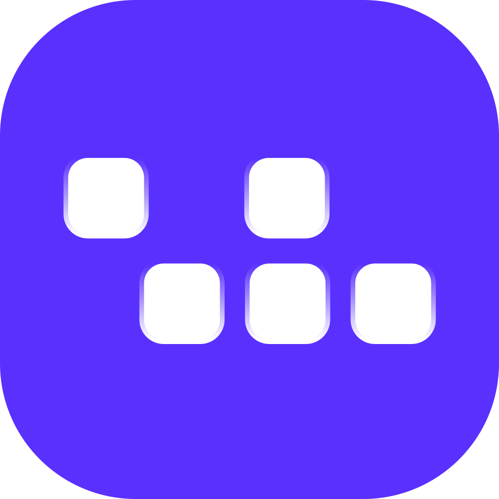

Pengaturan Keamanan macOS
Izin Akses
Diperlukan
Untuk mengaktifkan fitur remote lock screen dan remote shutdown, Vlinked membutuhkan izin sistem keamanan tambahan dari macOS Anda.
Mengapa ini diperlukan?
🔒 Privasi Pengguna
🛠️ Kontrol AppleScript
🛡️ System Sandbox
Device Health
98%
Optimal
Focus Ratio
92%
Sangat Engaged
Productivity Score
87%
Sangat Tinggi
Active Hours
6.8 Hours
Sesi Kerja Stabil